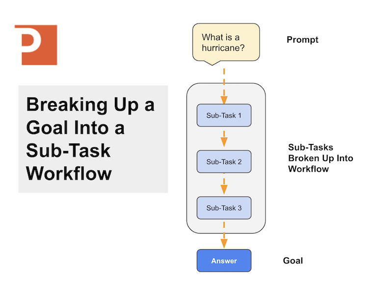
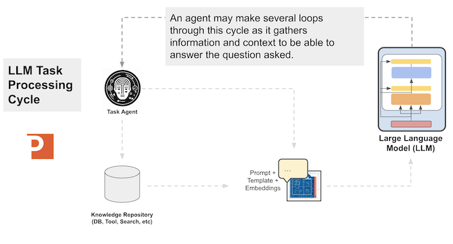

Part 3 - Design Patterns for Building Large Language Model Applications
Purpose of this series:
To understand the role of large language models in enteprise applications and some of the components, tools, and technologies relevant to building these applications.
This article, part 2 of the series, is focused on design patterns for enterprise large language model applications. We build on ideas from part 1 around large language models’ reasoning capabilities and how we can best use them in enterprise use cases.
The intended audience for this series is:
Individual practitioners, enterprise data teams, and enterprise executives
Series:
The final post is where I give context on the arena of artificial intelligence based on the history of the field. This context and history gives the reader a better viewpoint on recent developments in large language models.
In 2018 I wrote an appendix in our O’Reilly Deep Learning book that threw some (much-needed) cold water on the “deep learning as AI” hype cycle. I did however point out that one form of “artificial intelligence” was
AI as the reasoner
and that “Early AI pioneers were drawn to more refined and high-minded tasks—playing chess, solving logical proofs, and planning complex tasks” yet in 2018 that reasoning agents “Still struggle with tasks simple for children”.
Obviously a few things have changed, and in part 1 of this series I call out “reasoning” as the key ability to focus on as unique for large language models. With that being said, reasoning workflows are the key design pattern that I see as valuable (so far) with large language model applications. Let’s take a look at a way to convert a use case goal into a workflow we could build with a framework such as LangChain.
This section is based on early prototyping notes our team has collected designing LLM application prototypes for customers and partners.
To design a new LLM application, we follow the design steps listed below:
Let’s take some of these ideas and visualize how they work in practice.
Most goals are more complex than a single task so we need to break the goal down into a few sub-tasks that are “bite-sized” enough for a large language model to process in a single call. Sometimes there are pre-processing steps to do on the original prompt so that down-stream tasks are more directed.
An example of of this is anytime you are speaking in terms of a date or time, there can be some ambiguitiy in how time is expressed, so a pre-processing step might be something like “confirm the specific date in a MM/DD/YYYY format”. This is especially helpful in cases where the user implies a date such as “today”, etc.
Visually, if we take our goal and break it into a sub-task workflow, it looks like:

Once we have a logical flow of sub-tasks, we can begin to fit these tasks into a logical architecture that can be implemented by a LLM framework.
Once we’ve selected a goal and have broken it into sub-tasks, we can convert this workflow into a logical LLM Application architecture.
We can see the above diagrams generalized into an application workflow below:
In the diagram above we can see an agent pre-processing the prompt (e.g., add a template, add context) and then routing to different goal-specific agent. This is helpful when we have a system that has multiple potential goals that can be done depending on the text input.
If there are multiple major tasks in the application then the system routes the task to an agent that can do specific processing towards the goal. Using a specific agent for a specific goal is helpful as it keeps the sub-task workflow
Many times I see engineers talking about “training a new LLM” as soon as they have an idea for a new application, but I believe that to be the wrong place to start. As I wrote in part 1 of this series, you should be focused on the reasoning performance of the LLM you are using. Create some test sub-task LLM model inputs and see how well your chosen pre-trained LLM model performs. Through experimentation you’ll find a model that works well for your sub-task sets. A leaderboard of good models:
https://weightwatcher.ai/leaderboard.html
The key is to select a model that has “good enough reasoning ability for the intended task at hand” — e.g., you wouldn’t hire a phd meteorologist to get you coffee from starbucks. It would just be “a waste of the cost of their education”.
The hierarchy of LangChain Modules are loosely:
1. Agents utilize components of LLMs and Tools and
2. Chains utilize PromptTemplates and LLMs where
3. LLMs provide the text generations given an inputGeneral Components of a LLM Augmented Reasoning Application
In my design pattern notes for frameworks like LangChain I like the pattern of the agent for specific tasks. The reason for this is that if you have too many instructions in a single prompt, the model can get confused and produce inconsistent results or “hallucinations”.
https://python.langchain.com/docs/modules/chains/additional/multi_prompt_router
When we use the
todo
todo
Play up Cube’s semantic layer here — key to giving LLMs the context they need to understand your data model

Models
Required Tooling LangChain VectorStore Custom Corpus Something to ask questions about LLM OpenAI Other local model
https://colab.research.google.com/drive/1Rl3eh_rrN7sco4bkzApVqOzu1CtjoWPb
Sketch is an AI code-writing assistant for pandas users that understands the context of your data, greatly improving the relevance of suggestions. Sketch is usable in seconds and doesn’t require adding a plugin to your IDE.
Data Catalogging: General tagging (eg. PII identification) Metadata generation (names and descriptions) Data Engineering: Data cleaning and masking (compliance) Derived feature creation and extraction Data Analysis: Data questions Data visualization
Re-write:
Why do LLMs need to use Tools?
One of the most common challenges with LLMs is overcoming the lack of recency and specificity in their training data - answers can be out of date, and they are prone to hallucinations given the huge variety in their knowledge base. Tools are a great method of allowing an LLM to answer within a controlled context that draws on your existing knowledge bases and internal APIs - instead of trying to prompt engineer the LLM all the way to your intended answer, you allow it access to tools that it calls on dynamically for info, parses, and serves to customer.
Providing LLMs access to tools can enable them to answer questions with context directly from search engines, APIs or your own databases. Instead of answering directly, an LLM with access to tools can perform intermediate steps to gather relevant information. GPT-Plugins —- link page
https://www.datacamp.com/tutorial/introduction-to-lanchain-for-data-engineering-and-data-applications
Natural Language Dataset Query with LLMs
Querying Tabular Stores with NL: https://python.langchain.com/en/latest/use_cases/tabular.html Using Chains to Query APIs https://python.langchain.com/en/latest/use_cases/apis.html Using NL to Query SQL Databases https://python.langchain.com/en/latest/modules/chains/examples/sqlite.html https://github.com/hodgesmr/LangChain-Data-Demo
something something something